苹 謌风起于青苹之末， 狂来放謌自谴乐。
日晕奇观
日晕生七彩，美瞳出云端。
莫夜雨汲汲，晨曦霁灿灿。
【赏析】2016.05.23 成都、广元等地天空惊现罕见“日晕”天象奇观。 日晕也叫圆虹，是日光通过云层中的冰晶时，经折射而形成的光现象。 10时许，一个巨大的七彩光环围绕着太阳，从淡到浓，渐显 五彩斑斓，恰似“太阳带上了美瞳”，十分艳丽壮观。民间有“日晕 三更雨，月晕午时风”的谚语。。。。到午夜后，就会有一霎夏雨来 临。至清晨，雨过天晴，一缕阳光灿烂，新的一天生机怏然。。。。。
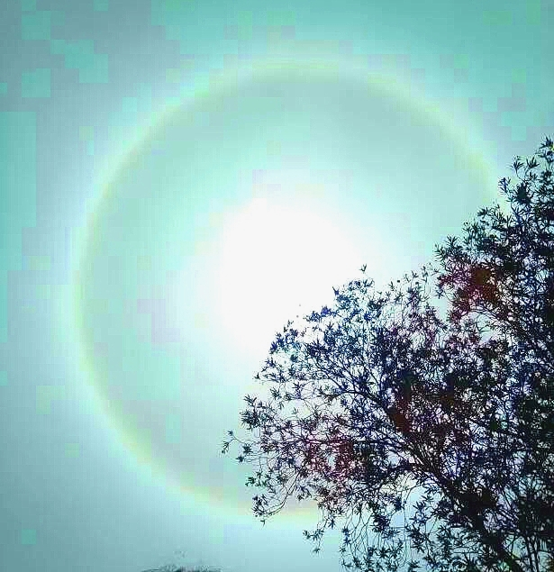
采 蜜
寻芳湿地园，蜂舞恋蕊鲜。
采得百花艳，酿蜜醉人间。
【赏析】周末游湿地公园，寻芳见蜜蜂飞舞，来回穿梭在花丛之中，还不时地盘旋逗留于花蕊间。 蜜蜂这样辛勤的奔波，都是为了采粉酿制甜甜的蜂蜜啊！百花因此也更显艳丽芳馨。
感悟：我们每天像蜜蜂似的辛勤劳作，不正是为了想蜜一样甜美的生活么。
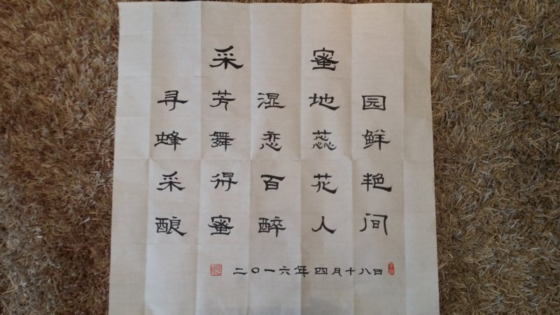
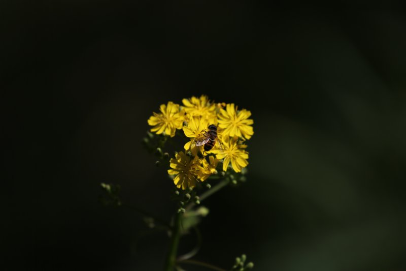
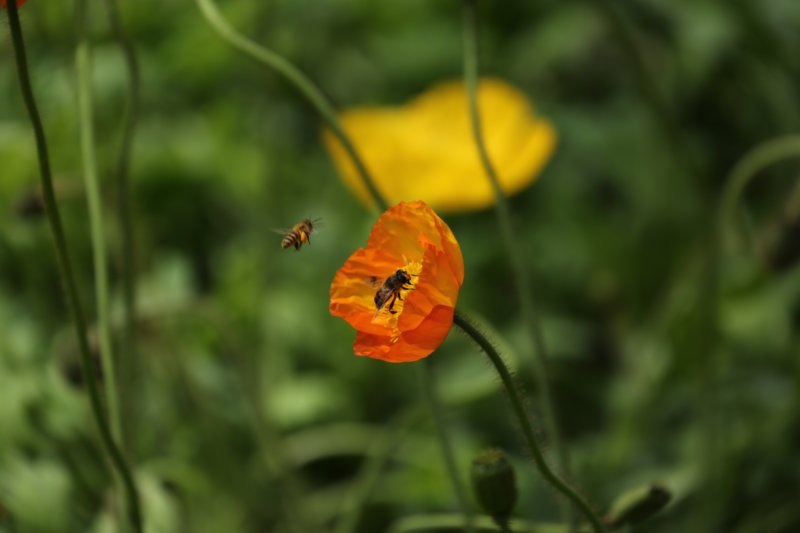
题移动扶贫会
阳春三月春意浓，移动扶贫推进中。
第一书记聚毗鹿，观摩交流共筹谋。
科技兴农小康梦，攻坚克难众心同。
授人以渔信息化，脱贫致富来年丰。
【注释】全市移动扶贫攻坚推进现场会在昭化区虎跳镇毗鹿村召开。
致友人
阳春三月三，靚妆丽人灿。
友人情义绵，百花竞相艳。
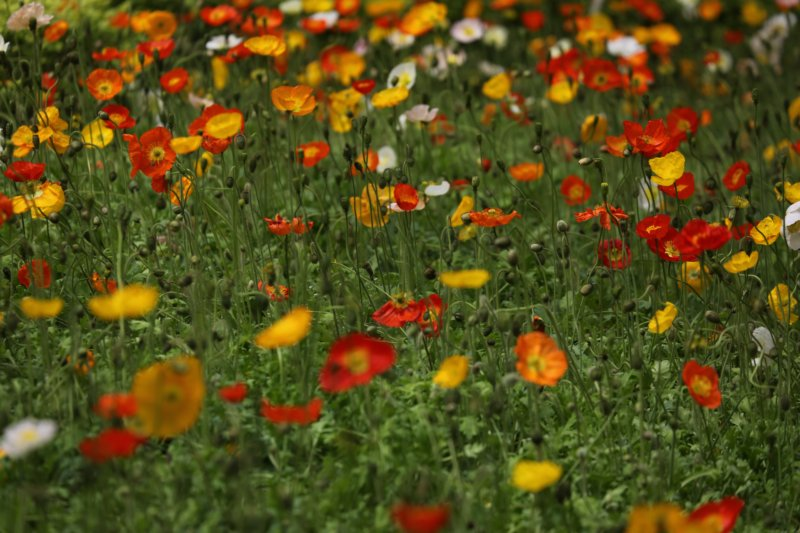
题一连优梦景
千年藤藤长，千丝饼饼香。
千丝万缕情，一连优梦乡。
【注释】“一连优梦”（昵称）之千丝饼、千年藤。
春 艳
乡野桃花迟迟鲜，和风细细催人揽。
田园春色溢香飘，游到瑶池靚娇艳。
(2016.03.30.春游龙潭)
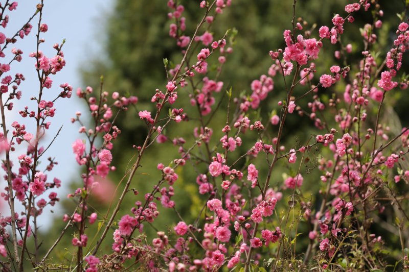
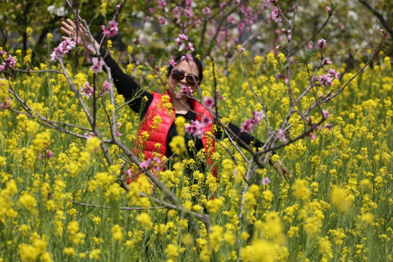
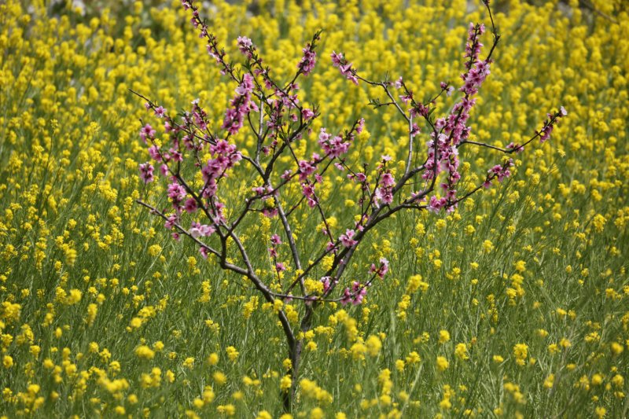
苹 謌
苹乃草本蕨植物， 十字对生根匍匐。
南边小涧水中藻， 于以菜苹诗经出。
风起青苹于之末， 歌或从言古为謌。
茗香清饮醉欲仙， 狂来放謌自遣乐。
【注释】
- 《诗经》“于以采苹？南涧之滨”。
- 楚国宋玉《风赋》“夫风生于地，起于青苹之末”。
- “薲”是“苹”的本字，古今字；“苹”今水上浮萍，大者谓之苹，小者曰蓱。
- 謌古同“歌”。
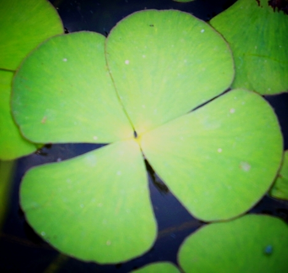
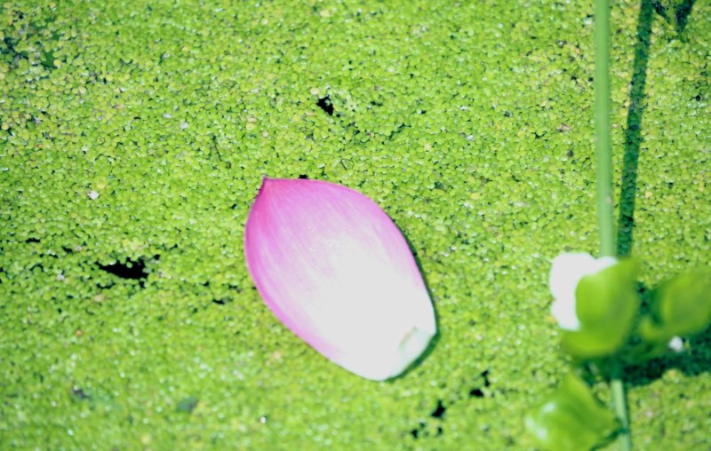
和家迁禧
小南山下倚万源，生态湿地新区灿。
乔迁之喜和家欢，千家万户信息缘。
【注释】和家：指移动通信大楼。
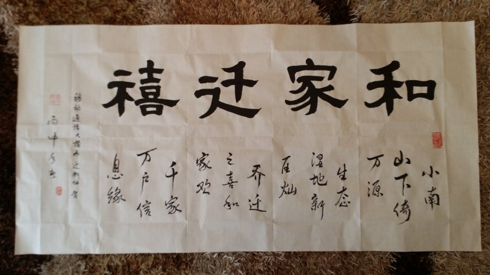
读名著精言感
细细品读经典言， 情义争悟滋味全。
四大名著久不衰， 人生哲理意蕴涵。
好聚好散难上难， 真情假意人性显。
你争我夺为哪般？ 文化精华世承传。
01502016.03.11 读《道尽人生滋味, 四大名著最动人的 60 句话》《红楼梦》—— 情
《水浒传》—— 义
《三国演义》—— 争
《西游记》—— 悟
三八妇女节颂
（一）
阵阵凉风吹阴天， 三八相约玫瑰园。
手持玫瑰游艺展， 拔河跳绳抢凳欢。
和家丽人多异彩， 巾帼骄子花盛开。
（二）
美丽天使水一样， 生命使者吐芬芳。
花儿朵朵漫山野， 谱写人类诗篇章。
（移动“和”家美女们的节日——玫瑰庄园游艺活动之乐）
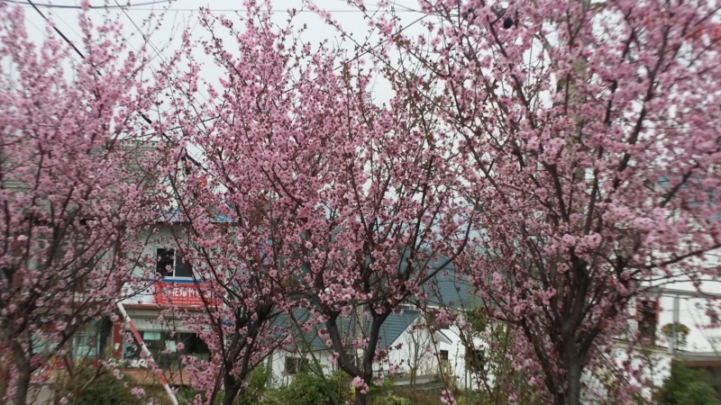
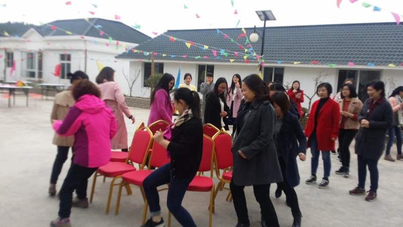